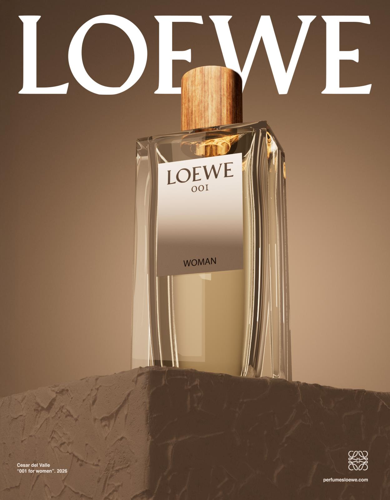
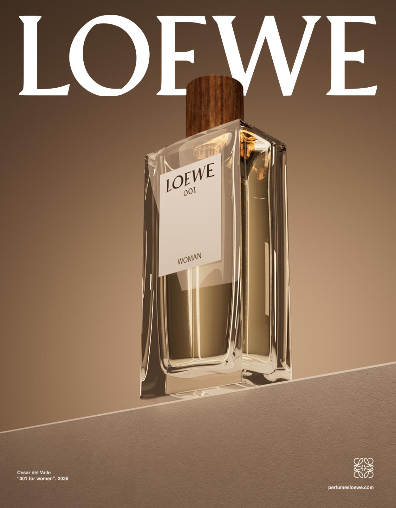
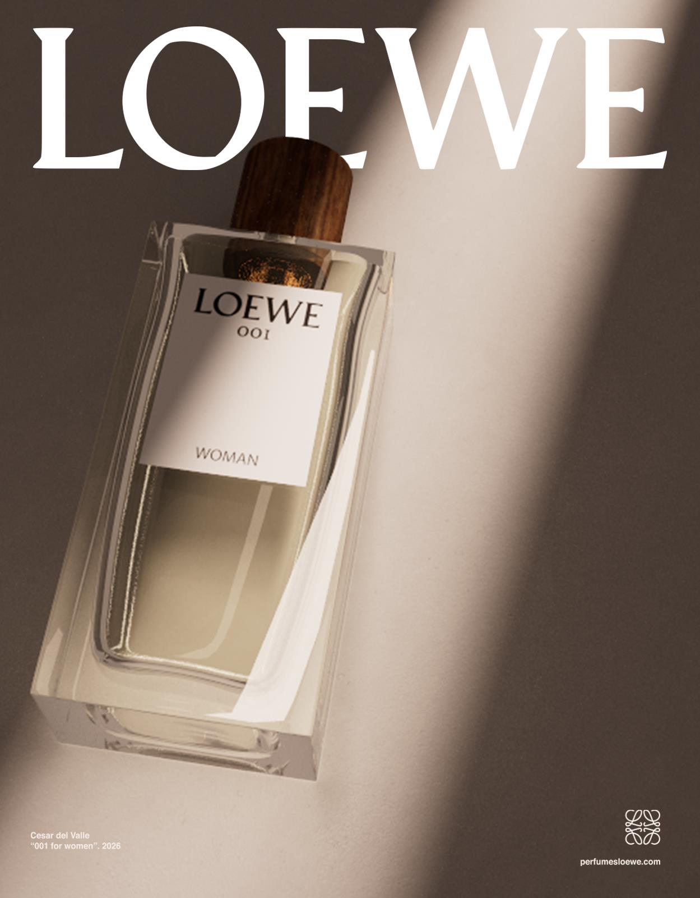

Project 053D · Motion · Spot
Spot audiovisual para el perfume — elegancia tranquila en movimiento.
Pieza creada íntegramente en Cinema 4D: modelado, iluminación, shading, animación y composición final. Una reinterpretación de la identidad de Loewe 001 a través de un lenguaje minimalista y delicado, con movimientos suaves de cámara y reflejos sutiles que transmiten la elegancia tranquila del producto.
Un lenguaje mínimo y delicado: la botella sobre piedra, movimientos lentos de cámara y reflejos que apenas rozan el vidrio. Nada grita; todo permanece.
Dirección de arte y composición: la botella sobre piedra, luz cálida y la elegancia tranquila de Loewe 001.



Traducir la elegancia tranquila de un perfume a movimiento, sin los recursos del spot publicitario convencional.
Cámara lenta, piedra y reflejos medidos: cada plano respira el producto. Modelado, luz y composición, íntegros en Cinema 4D.